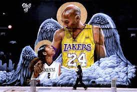

Con la firme convicción de buscar el tricampeonato, este viernes los Astros de Jalisco regresarán a escena dentro del Circuito de Baloncesto de la Costa del Pacífico (CIBACOPA). Será a las 20:00 horas de este viernes, tiempo del centro del país, cuando la quinteta dirigida por Jorge Elorduy se presente en la Arena Astros para chocar en contra de los Frayles de Guasave, escuadra que será el primer sinodal de los tapatíos en esta Temporada 2024.
Conocido por multitudes con el apodo del 'Chef', el hijo del ex jugador de la NBA, Dell Curry, ha logrado este enorme legado pero seguramente no es por lo que más sea recordado cuando acabe su carrera, la realidad es que más allá de su triunfos, seguramente es el jugador que más ha cambiado el deporte probablemente en la historia y, seguro, desde que Wilt Chamberlain pisó las duelas y obligó por su dominio debajo del aro a poner el área pintada y a incluir los tiros detrás de un arco con valor de tres puntos.
Aún pisando los 40 años de edad, LeBron sigue jugando a un alto nivel y el alero de los Lakers de Los Angeles sigue también, teniendo sus detractores, con ahora un legendario ex jugador haciendo unas declaraciones bastante explosivas sobre 'el Rey'.
La jugadora de la Universidad de Iowa Caitlin Clark hizo historia al convertirse en la máxima anotadora en la historia del baloncesto universitario, tanto en el baloncesto masculino como femenino. Clark superó el registro de la leyenda Pete Maravich, conocido popularmente como "Pistol Pete".
El 26 de enero de 2020, Kobe Bryant y su hija Gianna fallecieron junto a otras siete personas en un trágico accidente aéreo en Los Ángeles, y este viernes el mundo del deporte recordó su terrible ausencia.
